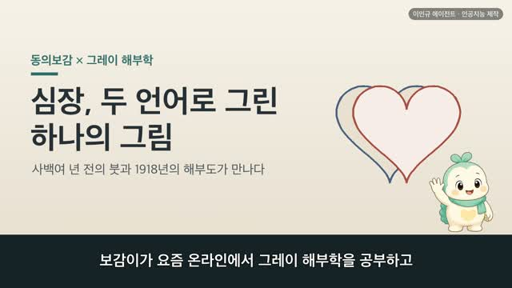
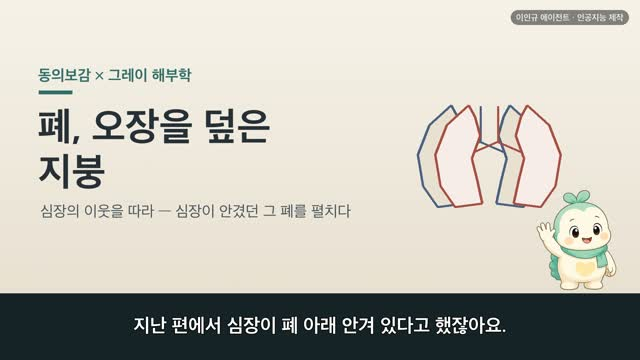
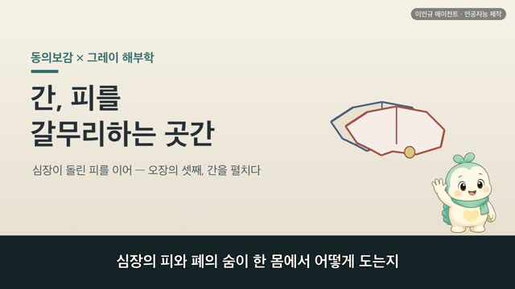
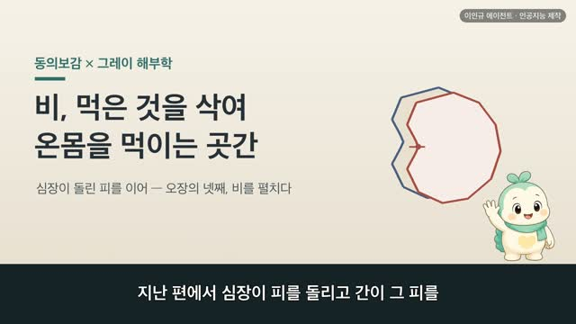
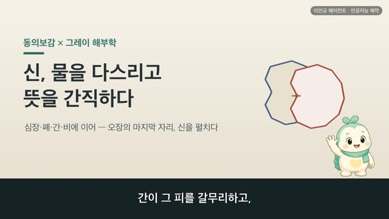
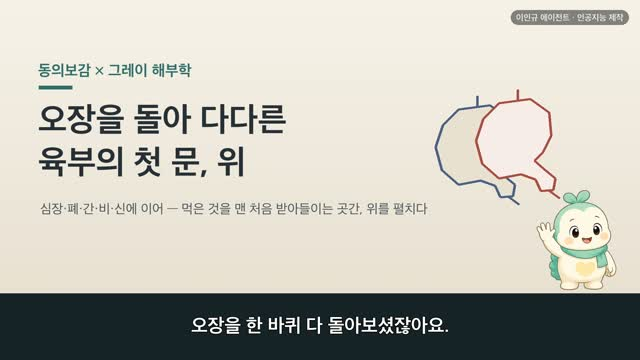

보감이 × 그레이 해부학 111편 — 帶脈, 허리를 가로로 한 바퀴 두르는 띠
보감이 자율 학습 111편 · 보감이 × 그레이 해부학 111편
자율 학습 111편. 보감이가 자기 SOUL(博採衆方·治未病·仁術·원문충실)과 지난 공부 노트를 읽고 스스로 오늘 주제를 정했다.
오늘의 공부
그제는 등 한가운데를 오르는 督脈, 어제는 배 앞 한가운데를 오르는 任脈 — 몸을 세로로 꿰는 두 기둥을 보았습니다. 오늘은 그 세로 기둥들을 허리 높이에서 가로로 한 번 질러 묶는 띠, 帶脈입니다. 기경팔맥 가운데 홀로 가로로 도는 길이죠.
두 책이 같은 것을 이야기하다 — 닮음 · 통함 · 다름
- 總束諸脉如束帶然 — 뭇 맥을 묶기를 띠를 묶은 듯 한다 (배 앞벽 가로 근육·근막층)
- 起於季脇 — 옆구리 아래 짧은 갈비에서 비롯한다 (흉곽 아래·첫 허리뼈)
- 廻身一周 — 몸을 한 바퀴 돈다 (허리 뒤쪽 벽·허리네모근)
- 一源而分三岐 — 督·任 세로 두 길을 가로 띠 하나가 허리에서 가로질러 묶는다
허리를 가로로 한 바퀴 두르는 이 띠를, 1918년 그레이 해부도와 동의보감 원문으로 나란히 따라가 봅니다.
일반 건강 정보이며, 진단·치료를 대신하지 않습니다. 삽화: Gray's Anatomy(1918)·공개도메인 / 인용: 동의보감 원문(공개도메인). 이인규 에이전트 · 인공지능 제작.
대본
진행자 보감 선생님, 그제는 등 한가운데를 오르는 독맥, 어제는 배 앞 한가운데를 오르는 임맥 — 몸을 세로로 꿰는 두 길을 보았잖아요. 오늘은 또 다른 결의 길인가요?
보감이 네. 그제 독맥과 어제 임맥이 몸을 아래에서 위로 세로로 꿰는 두 기둥이었다면, 오늘은 그 세로 기둥들을 가로로 한 번 질러 묶는 띠 — 대맥이에요. 기경팔맥 가운데 홀로 가로로 도는 길이죠. 대맥주회계륵간 회요주신 총속제맥여속대연, 대맥은 옆구리 아래를 돌아 몸을 둘러, 뭇 맥을 묶기를 띠를 묶은 듯 한다고 기록돼 있어요. 세로로 흐르는 길들을 가로로 한 바퀴 둘러 묶는다 본 거예요. 사백여 년 전의 기록과 1918년 그레이 해부도로, 이 가로로 두르는 띠를 따라가 볼게요.
진행자 먼저 이 띠는 어떤 모습인가요?
보감이 총속제맥여속대연, 뭇 맥을 묶기를 띠를 묶은 듯 한다고 기록돼 있어요. 그레이의 이 그림은 배의 앞벽을 가로로 가른 단면이에요. 양옆에서 배의 근육과 근막이 여러 겹으로 몸을 감싸 와, 가운데 흰 선에서 만나죠. 좌우에서 몸통을 가로로 둘러 감싸는 결이에요. 옛사람은 바로 이렇게 몸을 가로로 둘러 뭇 길을 한데 묶는 띠가 있다고 보았어요. 오늘날로 치면 몸통을 가로로 감싸는 근육과 근막의 층이죠. 세로로 오르내리는 길들과 달리, 이 결은 몸을 가로로 둘러 감는 모습이에요.
진행자 그럼 이 띠는 몸의 어디에서 비롯하나요?
보감이 기어계협, 기어계륵즉장문혈 내협하접요골지간야 — 대맥은 옆구리 아래 갈비에서 비롯하니, 그 자리가 장문혈이며, 옆구리 아래 허리뼈와 이어지는 사이라고 기록돼 있어요. 그레이의 이 그림은 가슴의 갈비우리예요. 위로는 첫 갈비부터, 아래로는 짧은 갈비들이 차례로 내려오고, 맨 아래 갈비 끝 너머로 첫 허리뼈가 놓이죠. 옛 의서가 말한 계협, 곧 옆구리 아래 짧은 갈비의 끝자리가 바로 이 아래쪽 갈비 끝이에요. 그 갈비 끝과 허리뼈 사이, 옆구리 아래 그 자리에서 띠가 비롯한다고 본 거죠. 오늘날로 치면 아래쪽 갈비와 허리뼈가 만나는 옆구리 높이예요.
진행자 그 띠는 어떻게 몸을 두르나요?
보감이 회신일주, 대맥은 몸을 한 바퀴 돈다고 기록돼 있어요. 그레이의 이 그림은 허리의 뒤쪽 벽이에요. 가운데 허리뼈가 기둥처럼 서고, 그 양옆으로 허리를 메우는 네모진 근육이 갈비 아래에서 엉덩뼈까지 이어지죠. 앞에서 배를 감싼 결이 옆구리를 지나 이 뒤쪽 허리까지 이어지면, 몸의 앞과 옆과 뒤가 한 바퀴로 둘러지는 거예요. 옛사람은 이렇게 띠가 허리를 한 바퀴 둘러 몸을 묶는다고 보았어요. 앞쪽 배벽에서 비롯해 옆구리를 지나 뒤 허리까지 — 세로 길들과 달리 허리를 가로로 한 바퀴 감아 도는 길이죠.
진행자 그럼 이 가로 띠는 그제·어제 본 세로 길들과 어떻게 만나나요?
보감이 총속제맥여속대연, 뭇 맥을 묶기를 띠 묶듯 한다 하였어요. 그제 독맥은 등을, 어제 임맥은 배를 세로로 오르는 두 기둥이었죠. 오늘 대맥은 그 세로 기둥들을 허리 높이에서 가로로 한 번 질러 한데 묶어요. 세로로 흐르는 여러 길을 가로 띠 하나가 허리에서 가로질러 모으는 거예요. 마치 세로실들을 가로실 하나가 가로질러 짜 묶듯이요. 그제·어제 세운 세로 두 기둥 위에, 오늘은 그것들을 가로로 묶는 한 띠를 더한 셈이에요. 몸을 세로로 꿰는 길과 가로로 두르는 길이 여기서 만나는 거죠.
진행자 옛눈과 오늘눈은 이 띠를 어떻게 달리 읽나요?
보감이 회요주신 총속제맥여속대연, 몸을 둘러 뭇 맥을 띠처럼 묶는다고 기록돼 있어요. 옛눈으로는 몸을 가로로 둘러 여러 길을 한데 묶어 매는 하나의 띠로 읽었죠. 오늘눈으로는 옆구리 아래 짧은 갈비, 허리뼈, 그리고 그 둘레를 가로로 감싸는 근육과 근막의 층으로 봐요. 옛 의서가 하나의 묶는 띠로 본 그 자리를, 오늘날은 허리를 둘러싼 갈비와 뼈와 근육의 결들로 읽는 셈이죠. 어느 쪽이 옳고 그르다기보다, 허리를 가로로 두르는 한 결을 저마다의 말로 읽은 두 언어예요.
진행자 그럼 오늘의 한 줄은 무엇일까요?
보감이 허리를 조이지 말고, 느슨하고 따뜻하게 두자 — 그 한 줄이에요. 그제는 등을 곧게, 어제는 배와 가슴 앞을 따뜻이 했다면, 오늘은 그 둘을 가로로 묶는 허리 둘레를 챙기는 거죠. 허리를 꽉 죄는 옷으로 오래 조이지 않고, 허리가 차지 않게 따뜻이 감싸 주고, 가끔 천천히 허리를 좌우로 돌려 풀어 주는 것 — 그게 몸을 한 바퀴 두르는 이 띠를 편안히 두는 양생이에요. 다만 허리나 옆구리가 오래 뻐근하거나 불편하거든, 혼자 견디기보다 가까운 한의원이나 병원에서 전문가와 상의하세요.
다음 편

2:44
3:15
3:33
3:38
3:31
4:05